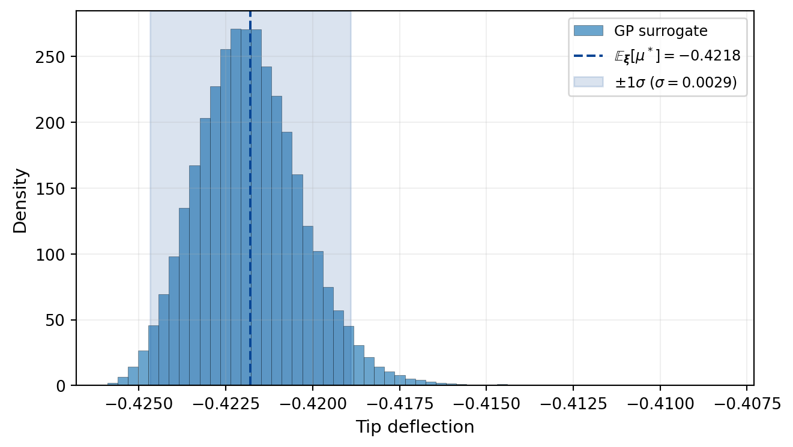
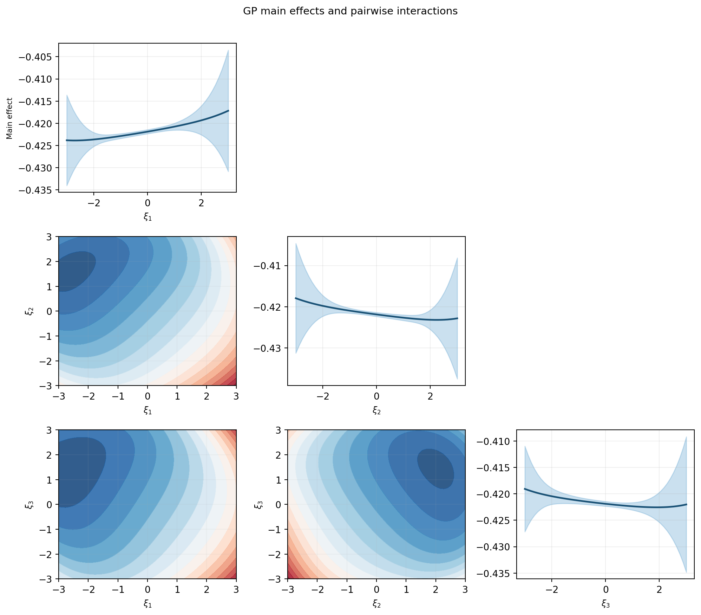

import numpy as np
import matplotlib.pyplot as plt
from pyapprox.util.backends.numpy import NumpyBkd
from pyapprox.benchmarks.instances import cantilever_beam_2d_linear
from pyapprox.benchmarks.instances.pde.cantilever_beam import MESH_PATHS
from pyapprox.surrogates.gaussianprocess import ExactGaussianProcess
from pyapprox.surrogates.kernels.composition import SeparableProductKernel
from pyapprox.surrogates.kernels.matern import SquaredExponentialKernel
from pyapprox.surrogates.gaussianprocess.fitters import (
GPMaximumLikelihoodFitter,
)
bkd = NumpyBkd()
benchmark = cantilever_beam_2d_linear(bkd, num_kle_terms=1, mesh_path=MESH_PATHS[4])
model = benchmark.function()
prior = benchmark.prior()
marginals = prior.marginals()
nvars = model.nvars()UQ with Gaussian Processes
PyApprox Tutorial Library
Use a fitted GP surrogate to compute analytical moments, marginal densities, and main effects — all without additional model evaluations.
TipDownload Notebook
Learning Objectives
After completing this tutorial, you will be able to:
- Explain the difference between the GP posterior mean \(\mu^*(\boldsymbol{\xi})\) and the mean of the GP \(\E_{\boldsymbol{\xi}}[\mu^*(\boldsymbol{\xi})]\) under the input distribution
- Compute the mean, variance, and their GP-uncertainty counterparts analytically using a separable product kernel
- Construct marginal density estimates for each QoI using the GP surrogate
- Marginalize a fitted GP over selected input dimensions and visualise the resulting main effects and pairwise interaction plots
Two Sources of Uncertainty
When we use a GP surrogate for UQ there are two distinct sources of uncertainty that it is important to keep separate:
Input uncertainty: the model inputs \(\boldsymbol{\xi}\) are random, drawn from a known distribution \(\rho(\boldsymbol{\xi})\). We want to propagate this uncertainty through the model to characterise the distribution of the QoI.
Surrogate uncertainty: the GP is fitted to a finite training set, so the GP posterior is itself uncertain about the true function values. This uncertainty is captured by the posterior variance function \(\gamma_f(\boldsymbol{\xi}) = \sigma^{*2}(\boldsymbol{\xi})\), which measures the GP’s remaining uncertainty at each point in the input space.
The GaussianProcessStatistics class computes quantities that account for both sources simultaneously. For example:
- \(\E_{\boldsymbol{\xi}}[\mu^*(\boldsymbol{\xi})] = \int \mu^*(\boldsymbol{\xi}) \rho(\boldsymbol{\xi})\,d\boldsymbol{\xi}\) is the expected QoI mean under the surrogate
- \(\Var_{\boldsymbol{\xi}}[\mu^*(\boldsymbol{\xi})]\) measures how uncertain we are about that mean due to limited training data — it goes to zero as \(N \to \infty\)
This distinction is unique to probabilistic surrogates like GPs and is not available with deterministic surrogates such as PCE or neural networks.
Setup: Beam Model and GP Surrogate
We use the same 2D cantilever beam as in Building a GP Surrogate, with three Gaussian KLE coefficients as uncertain inputs.
ImportantSeparable kernel required
The analytical statistics machinery (SeparableKernelIntegralCalculator) requires a separable product kernel:
\[ k(\boldsymbol{\xi}, \boldsymbol{\xi}') = \prod_{d=1}^{D} k_d(\xi_d, \xi_d') \]
This factorisation lets the \(d\)-dimensional integral over the kernel split into a product of \(d\) one-dimensional integrals, which can be computed exactly with Gauss quadrature. Kernels such as Matérn 5/2 with a combined Euclidean distance do not satisfy this property and cannot be used with this calculator. We therefore use a SeparableProductKernel composed of independent 1D SE kernels, one per input dimension.
# One squared-exponential kernel per input dimension — product is separable
kernels = [
SquaredExponentialKernel([1.0], (0.05, 5.0), 1, bkd)
for _ in range(nvars)
]
kernel = SeparableProductKernel(kernels, bkd)
gp = ExactGaussianProcess(kernel, nvars=nvars, bkd=bkd, nugget=1e-6)
# Training data
np.random.seed(42)
N_train = 100
X_train = prior.rvs(N_train) # (nvars, N_train)
y_train = model(X_train)[:1, :] # tip deflection only, (1, N_train)
# Fit GP with hyperparameter optimisation
fitter = GPMaximumLikelihoodFitter(bkd)
result = fitter.fit(gp, X_train, y_train)
gp = result.surrogate()
# Verify surrogate accuracy on an independent test set
np.random.seed(123)
N_test = 500
X_test = prior.rvs(N_test)
y_test = model(X_test)[:1, :]
y_pred = gp.predict(X_test)
rel_rmse = float(bkd.to_numpy(
bkd.sqrt(bkd.mean((y_test - y_pred)**2)) / bkd.sqrt(bkd.mean(y_test**2))
))Analytical Moments via Kernel Integrals
For a GP with a separable product kernel \(k = \prod_d k_d\) and zero mean function, the posterior mean is:
\[ \mu^*(\boldsymbol{\xi}) = \vc{k}(\boldsymbol{\xi})^\top \boldsymbol{\alpha}, \qquad \boldsymbol{\alpha} = (K + \nu I)^{-1}\vc{y} \]
where \(k_i(\boldsymbol{\xi}) = k(\boldsymbol{\xi}, \boldsymbol{\xi}^{(i)})\). Under the input distribution \(\rho = \prod_d \rho_d\), the mean of the posterior mean is:
\[ \E_{\boldsymbol{\xi}}[\mu^*(\boldsymbol{\xi})] = \int \mu^*(\boldsymbol{\xi}) \rho(\boldsymbol{\xi})\,\dd\boldsymbol{\xi} = \boldsymbol{\tau}^\top \boldsymbol{\alpha} \]
where \(\tau_i = \int k(\boldsymbol{\xi}, \boldsymbol{\xi}^{(i)}) \rho(\boldsymbol{\xi})\,\dd\boldsymbol{\xi}\) is the integral of each kernel column. With a separable kernel and separable distribution, \(\tau_i = \prod_d \tau_d^{(i)}\) where each factor is a cheap 1D Gauss-quadrature integral.
Similarly, the variance of the posterior mean is:
\[ \Var_{\boldsymbol{\xi}}[\mu^*(\boldsymbol{\xi})] = \int\!\int \mu^*(\boldsymbol{\xi}) \mu^*(\boldsymbol{\xi}') \rho(\boldsymbol{\xi}) \rho(\boldsymbol{\xi}')\,\dd\boldsymbol{\xi}\,\dd\boldsymbol{\xi}' - \E_{\boldsymbol{\xi}}[\mu^*]^2 = \boldsymbol{\alpha}^\top P \boldsymbol{\alpha} - (\boldsymbol{\tau}^\top \boldsymbol{\alpha})^2 \]
where \(P_{ij} = \int k(\boldsymbol{\xi}, \boldsymbol{\xi}^{(i)}) k(\boldsymbol{\xi}, \boldsymbol{\xi}^{(j)}) \rho(\boldsymbol{\xi})\,\dd\boldsymbol{\xi}\) is the P matrix — a double kernel integral computable via separable quadrature.
Building the Calculator
from pyapprox.surrogates.sparsegrids.basis_factory import (
create_basis_factories,
)
from pyapprox.surrogates.gaussianprocess.statistics import (
SeparableKernelIntegralCalculator,
GaussianProcessStatistics,
)
# Gauss-Hermite quadrature for N(0,1) inputs, 20 points per dimension
nquad = 20
factories = create_basis_factories(marginals, bkd, "gauss")
bases = [f.create_basis() for f in factories]
for b in bases:
b.set_nterms(nquad)
calc = SeparableKernelIntegralCalculator(gp, bases, marginals, bkd=bkd)
stats = GaussianProcessStatistics(gp, calc)# Mean of GP mean: E_xi[mu*(xi)]
eta = stats.mean_of_mean()
# Variance of GP mean: V_xi[mu*(xi)] (uncertainty from limited training data)
var_mu = stats.variance_of_mean()
# Mean of GP variance: E_xi[gamma_f(xi)] (expected posterior variance)
mean_var = stats.mean_of_variance()
# Variance of GP variance: V_xi[gamma_f(xi)]
var_var = stats.variance_of_variance()
NoteInterpreting the four statistics
| Quantity | Meaning |
|---|---|
| \(\E_{\boldsymbol{\xi}}[\mu^*(\boldsymbol{\xi})]\) | Best estimate of the QoI mean under the input distribution |
| \(\Var_{\boldsymbol{\xi}}[\mu^*(\boldsymbol{\xi})]\) | Uncertainty in that mean estimate due to limited training data; shrinks as \(N \to \infty\) |
| \(\E_{\boldsymbol{\xi}}[\gamma_f(\boldsymbol{\xi})]\) | How much posterior uncertainty the GP still has on average across the input space |
| \(\Var_{\boldsymbol{\xi}}[\gamma_f(\boldsymbol{\xi})]\) | Whether the uncertainty is spread uniformly or concentrated in some regions |
Comparing to True-Model Quadrature
We compute reference statistics by evaluating the true beam model on a small tensor product Gauss-Hermite rule (5 points per dimension = 125 model evaluations). These serve as ground truth for the GP-based estimates.
from pyapprox.surrogates.quadrature import (
TensorProductQuadratureRule,
gauss_quadrature_rule,
)
# Reference: true model evaluated on TP Gauss-Hermite quadrature
nquad_ref = 5
univariate_rules = [
lambda n, m=marginals[d]: gauss_quadrature_rule(m, n, bkd)
for d in range(nvars)
]
tp_rule = TensorProductQuadratureRule(bkd, univariate_rules, [nquad_ref] * nvars)
X_quad, w_quad = tp_rule() # (nvars, 125), (125,)
y_quad = model(X_quad)[:1, :] # true model at quad pts
ref_mean = float(bkd.to_numpy(bkd.sum(w_quad * y_quad[0, :])))
ref_var = float(bkd.to_numpy(bkd.sum(w_quad * y_quad[0, :]**2) - ref_mean**2))
# GP analytical statistics
gp_mean = float(bkd.to_numpy(eta))
gp_var = float(bkd.to_numpy(mean_var + var_mu))
gp_std = np.sqrt(gp_var)The GP mean closely matches the true-model reference. The GP variance is larger because \(\E_{\boldsymbol{\xi}}[\gamma_f] + \Var_{\boldsymbol{\xi}}[\mu^*]\) includes the surrogate uncertainty — the expected posterior variance that would vanish with infinitely many training points. The law of total variance gives:
\[ \Var_{\boldsymbol{\xi}}[f] \approx \Var_{\boldsymbol{\xi}}[\mu^*] + \E_{\boldsymbol{\xi}}[\gamma_f] \]
so the GP-based estimate is an upper bound on the true variance, with the gap shrinking as \(N \to \infty\).
Marginal Densities
Rather than summarising the QoI distribution with moments, we can estimate its full marginal density. With a surrogate, this is straightforward: sample many inputs from the prior, evaluate the (cheap) surrogate, and plot a histogram.
from pyapprox.tutorial_figures._pce import plot_gp_marginal_density
np.random.seed(999)
N_mc = 50_000
X_mc = prior.rvs(N_mc)
mu_mc = bkd.to_numpy(gp.predict(X_mc))[0, :]
fig, ax = plt.subplots(figsize=(7, 4))
plot_gp_marginal_density(mu_mc, gp_mean, gp_std, ax)
plt.tight_layout()
plt.show()
The surrogate density is smooth and inexpensive to generate. The \(\pm 1\sigma\) band reflects the GP’s combined input and surrogate uncertainty: it is wider than the histogram spread because \(\sigma\) includes the expected posterior variance \(\E_{\boldsymbol{\xi}}[\gamma_f]\), not just the variance of the mean.
NoteWhy are the \(\pm 1\sigma\) bands wider than the histogram?
The histogram shows the spread of \(\mu^*(\boldsymbol{\xi})\) — the GP posterior mean evaluated at many random inputs. Its width reflects \(\Var_{\boldsymbol{\xi}}[\mu^*]\), the variance of the mean prediction.
The \(\pm 1\sigma\) band uses \(\sigma = \sqrt{\E_{\boldsymbol{\xi}}[\gamma_f] + \Var_{\boldsymbol{\xi}}[\mu^*]}\), which adds the expected posterior variance \(\E_{\boldsymbol{\xi}}[\gamma_f]\). This extra term accounts for the GP’s uncertainty about the true function value at each point. Even when the GP is very accurate (low RMSE), the posterior variance \(\gamma_f(\boldsymbol{\xi})\) can still be non-negligible, especially in regions with sparse training data. As \(N \to \infty\) the posterior variance shrinks to zero and the band converges to the histogram width.
Marginalizing the GP
A marginalised GP integrates out a subset of input dimensions analytically, producing a lower-dimensional surrogate that captures how the model output varies with only the active dimensions:
\[ \tilde{\mu}^*(\boldsymbol{\xi}_p) = \int \mu^*(\boldsymbol{\xi}_p, \boldsymbol{\xi}_{\sim p})\, \rho_{\sim p}(\boldsymbol{\xi}_{\sim p})\,d\boldsymbol{\xi}_{\sim p} = \tilde{\boldsymbol{\tau}}_{\sim p}(\boldsymbol{\xi}_p)^\top \boldsymbol{\alpha} \]
where \(\tilde{\boldsymbol{\tau}}_{\sim p}\) is the conditional kernel integral vector with the non-active dimensions integrated out. This is the main effect of input \(\boldsymbol{\xi}_p\) — the portion of the QoI variation attributable to those variables alone.
from pyapprox.surrogates.gaussianprocess.statistics.marginalization import (
MarginalizedGP,
)
# Main effects: one MarginalizedGP per input variable
marg_gps = [
MarginalizedGP(gp, calc, active_dims=[d])
for d in range(nvars)
]
# 2D interactions: one MarginalizedGP per pair (i, j)
marg_pairs = {
(i, j): MarginalizedGP(gp, calc, active_dims=[i, j])
for i in range(nvars) for j in range(i + 1, nvars)
}Main Effects and Pair Plots
Figure 2 shows the main effects (diagonal) and pairwise interactions (off-diagonal) of the GP surrogate, analogous to the FT tutorial.
npts = 51
xi_1d = np.linspace(-3.0, 3.0, npts)
fig, axes = plt.subplots(nvars, nvars, figsize=(3.5 * nvars, 3.0 * nvars))
var_labels = [rf"$\xi_{{{d+1}}}$" for d in range(nvars)]
for i in range(nvars):
for j in range(nvars):
ax = axes[i, j]
if i == j:
# --- Diagonal: 1D main effect ---
z = bkd.asarray(xi_1d.reshape(1, -1))
mean_1d, var_1d = marg_gps[i].predict(z)
mu = bkd.to_numpy(mean_1d)
sig = np.sqrt(np.maximum(bkd.to_numpy(var_1d), 0))
ax.plot(xi_1d, mu, color="#1A5276", lw=1.8)
ax.fill_between(xi_1d, mu - 2*sig, mu + 2*sig,
alpha=0.25, color="#2E86C1")
ax.set_xlabel(var_labels[i], fontsize=9)
if j == 0:
ax.set_ylabel("Main effect", fontsize=8)
ax.grid(True, alpha=0.2)
elif i > j:
# --- Lower triangle: 2D interaction contour ---
Xi, Xj = np.meshgrid(xi_1d, xi_1d)
z2d = bkd.asarray(
np.row_stack([Xi.ravel(), Xj.ravel()])
)
pair = marg_pairs[(j, i)] if j < i else marg_pairs[(i, j)]
mu_2d = bkd.to_numpy(pair.predict_mean(z2d)).reshape(npts, npts)
cs = ax.contourf(xi_1d, xi_1d, mu_2d, levels=18,
cmap="RdBu_r", alpha=0.85)
ax.set_xlabel(var_labels[j], fontsize=9)
ax.set_ylabel(var_labels[i], fontsize=9)
ax.grid(True, alpha=0.1)
else:
# --- Upper triangle: empty ---
ax.set_visible(False)
plt.suptitle("GP main effects and pairwise interactions", fontsize=11, y=1.01)
plt.tight_layout()
plt.show()
The main effect plots convey which inputs drive the largest variation in tip deflection. The interaction plots reveal whether two inputs jointly affect the output in a way that cannot be explained by their individual main effects.
NoteWhy is the marginal variance so large when the GP is accurate?
The \(\pm 2\sigma\) bands on the diagonal plots may appear surprisingly wide even when the GP has a very low prediction RMSE. This is not a sign of poor surrogate quality. The variance shown here is the marginal variance of the marginalized GP — it reflects the variability of the output when the other input dimensions are integrated out over their prior distributions, not the GP’s prediction uncertainty at a single point.
Concretely, for the main effect of input \(d\), the marginalised mean is \(\tilde{\mu}^*(\xi_d) = \int \mu^*(\boldsymbol{\xi})\,\rho_{\sim d}(\boldsymbol{\xi}_{\sim d})\,d\boldsymbol{\xi}_{\sim d}\), and its variance comes from the spread of \(\mu^*\) over all possible values of the remaining inputs. Even a perfect surrogate would show this spread — it is an intrinsic property of the function, not a deficiency of the GP. The posterior uncertainty of the GP (the \(\gamma_f\) term) contributes only a small additional component on top of this input-driven variability.
Key Takeaways
- A GP surrogate with a separable product kernel enables analytical UQ: all required integrals reduce to products of cheap 1D Gauss quadrature sums
- The four statistics \(\E_{\boldsymbol{\xi}}[\mu^*]\), \(\Var_{\boldsymbol{\xi}}[\mu^*]\), \(\E_{\boldsymbol{\xi}}[\gamma_f]\), \(\Var_{\boldsymbol{\xi}}[\gamma_f]\) separate input uncertainty (the QoI distribution) from surrogate uncertainty (limited training data)
- Marginalised GPs give main effects and pairwise interactions without any additional model evaluations, by analytically integrating out the non-active inputs
Exercises
Increase the training set from \(N=100\) to \(N=200\). How does \(\Var_{\boldsymbol{\xi}}[\mu^*]\) change? Is the change consistent with the expected \(1/N\) scaling?
Replace the Gaussian inputs with Uniform\([-3, 3]\) marginals and
create_basis_factories(..., "gauss_legendre"). How do the Sobol indices change?Fit the GP to both QoIs (tip deflection and stress). Compute the marginal densities for each using the MC approach and compare the shapes.
Next Steps
- GP-Based Sensitivity Analysis — Compute Sobol indices from GP kernel integrals and verify against fix-and-freeze estimates
- Adaptive Sampling for Gaussian Processes — Reduce the training set budget by choosing sample locations that minimise posterior uncertainty
- UQ with Polynomial Chaos — Analogous workflow using a PCE surrogate; compare computation cost and accuracy